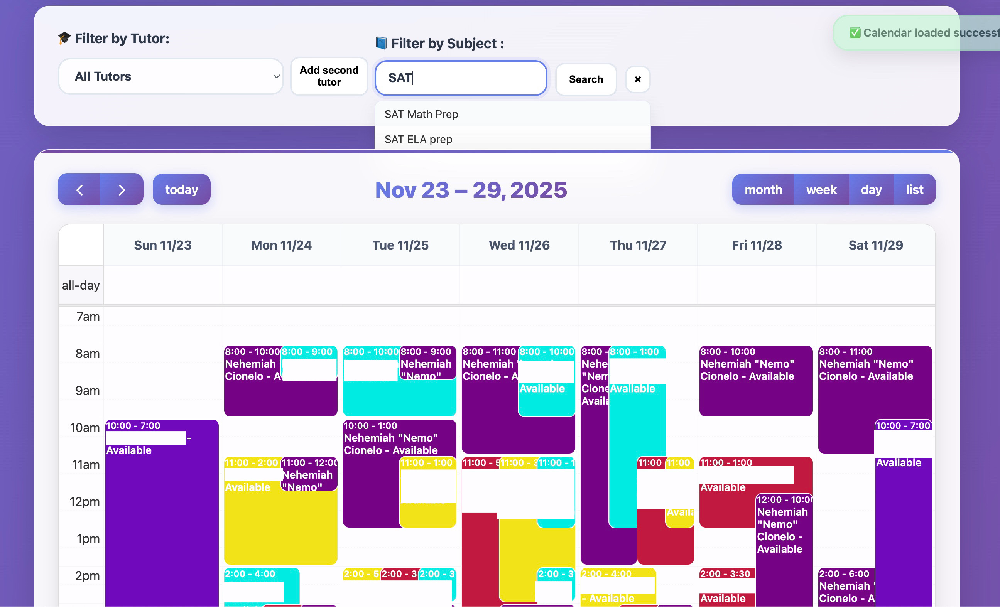

Featured Projects
Full-stack applications demonstrating end-to-end technical execution
Student Tutor Dashboard
Production web application serving 1,215+ operational hours
Custom-built scheduling and operations dashboard integrating Google Apps Script, iCal feeds, and real-time data processing. Eliminated manual scheduling friction for tutoring operations team.

PACE - Performance Analysis & Coaching Engine
Real-Time Race Data Intelligence for Cross Country & Track
Multi-vendor ETL pipeline scraping 8+ NCAA timing systems, normalizing race data into unified schema, and delivering coach-facing analytics dashboard. Mirrors marketing technology data pipelines with cross-platform normalization.

Tutor Availability Dashboard
Operational Scheduling Tool for Tutoring Operations
Lightweight scheduling assistant filling workflow gaps in Teachworks platform. Transforms static availability data into live, cross-filterable dashboard with subject-based filtering and multi-tutor comparison.
